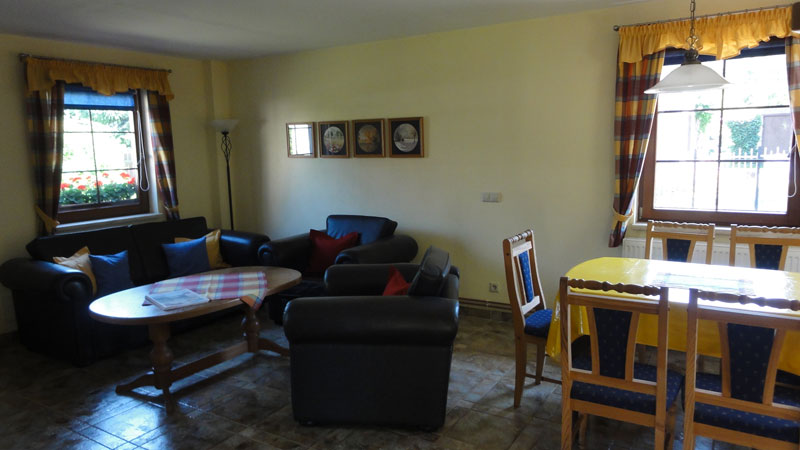

Das große Ferienhaus
Es erwartet Sie ein großzügiges Haus mit Terrasse am Teich. Hier kann man grillen oder den Tag am Lagerfeuer ausklingen lassen. Im Erdgeschoss befindet sich der Wohnraum mit komplett ausgestatteter Küche. Ein knisterndes Kaminfeuer sorgt für Gemütlichkeit am Abend. Ein Essplatz mit viel Licht und ein Bad mit Dusche und WC ergänzen das Erdgeschoss. Im Obergeschoss befinden sich die Schlafgelegenheiten für bis zu 6 Personen. Handtücher und Bettwäsche gehören zur Ausstattung.


